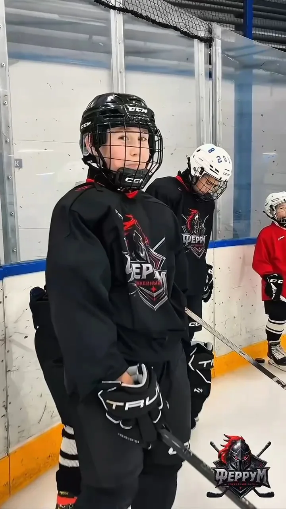

ФЕРРУМ / ВИДЕОДЕТСКАЯ ТРЕНИРОВКА00:19Первые шаги.
Большая игра.
Моменты детской тренировки: упражнения на льду, работа с тренером и знакомство с хоккеем.
Тренировки, матчи и люди «Феррума».
Наш хоккей — в движении и в кадре.

ФЕРРУМ / ВИДЕОДЕТСКАЯ ТРЕНИРОВКА00:19Моменты детской тренировки: упражнения на льду, работа с тренером и знакомство с хоккеем.
На льду и за его пределами.
Здесь будут наши любимые кадры.
Новые тренировки. Новые встречи. Новые истории.
Познакомиться с аренойТренировки, матчи и встречи.
Сохраняем моменты, к которым хочется возвращаться.
Здесь появятся фотоальбомы из жизни клуба.